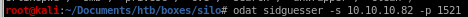

SID Guesser
The first thing we need to enumerate is the Oracle System ID (SID) string. This is a string that is used to uniquely identify a particular database on a system. This can be done using the sidguesser module in ODAT.odat sidguesser -s 10.10.10.82 -p 1521
